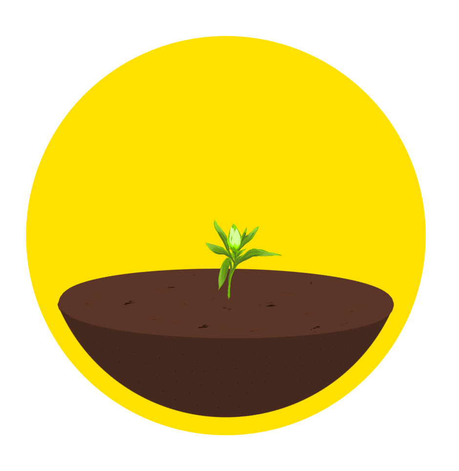
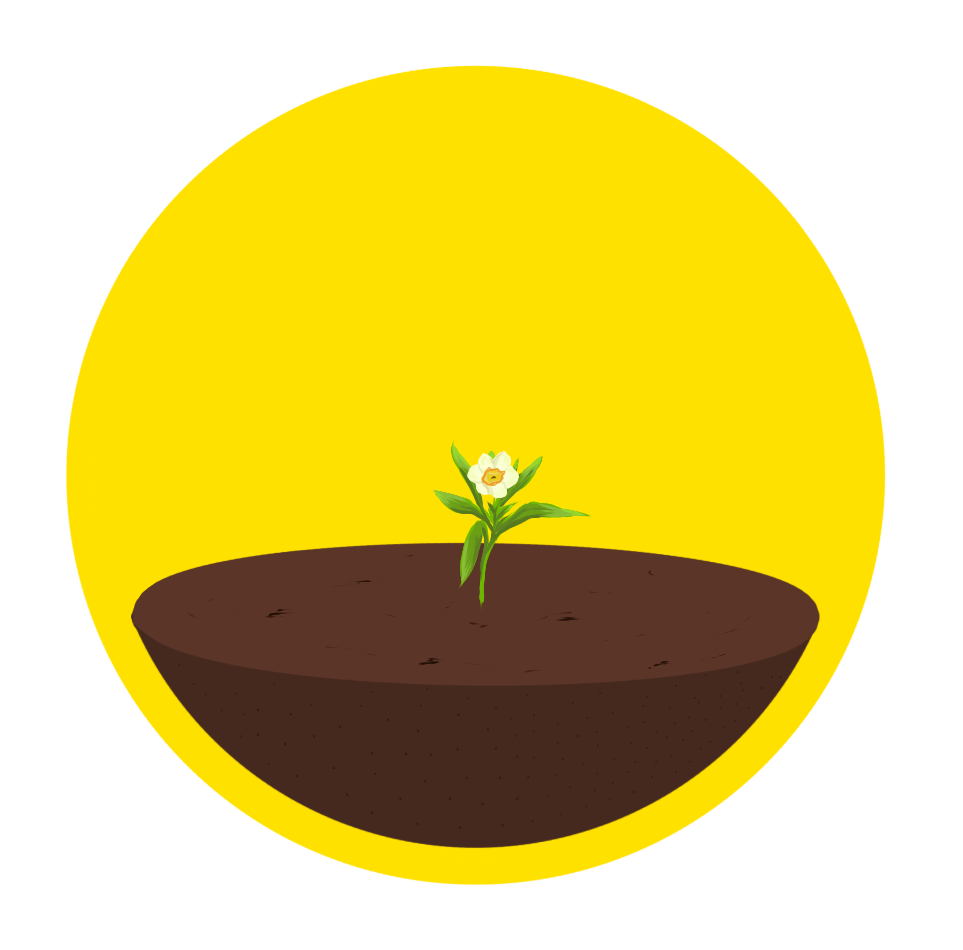
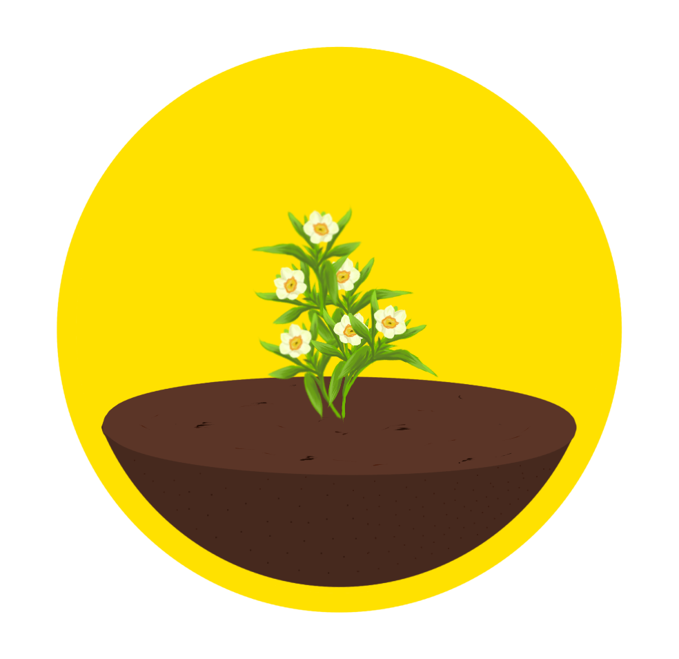
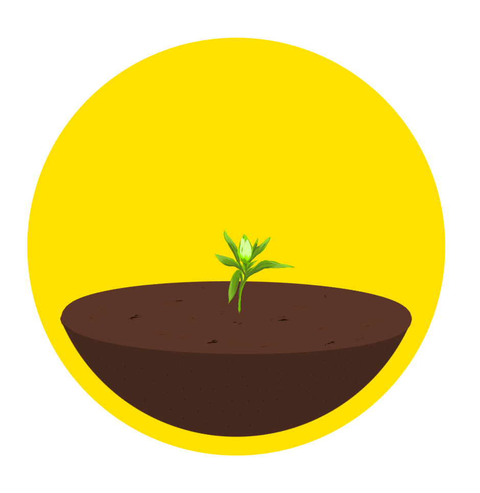
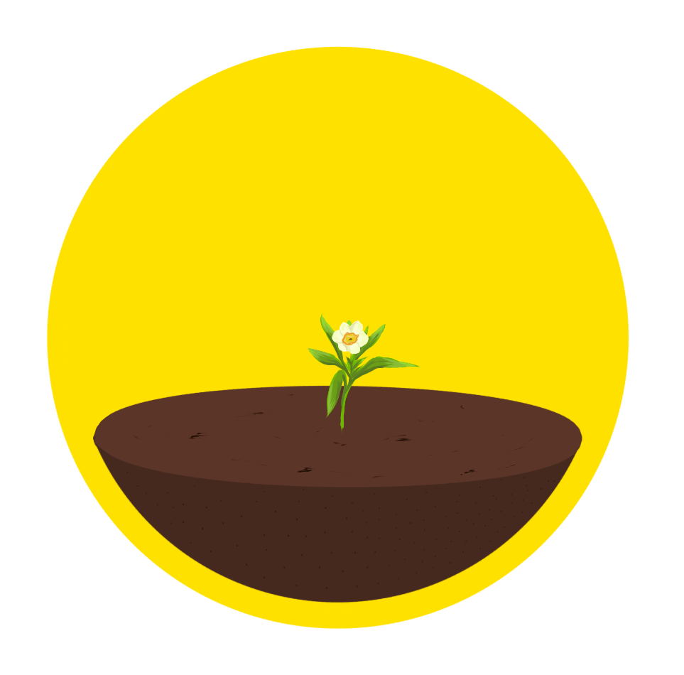
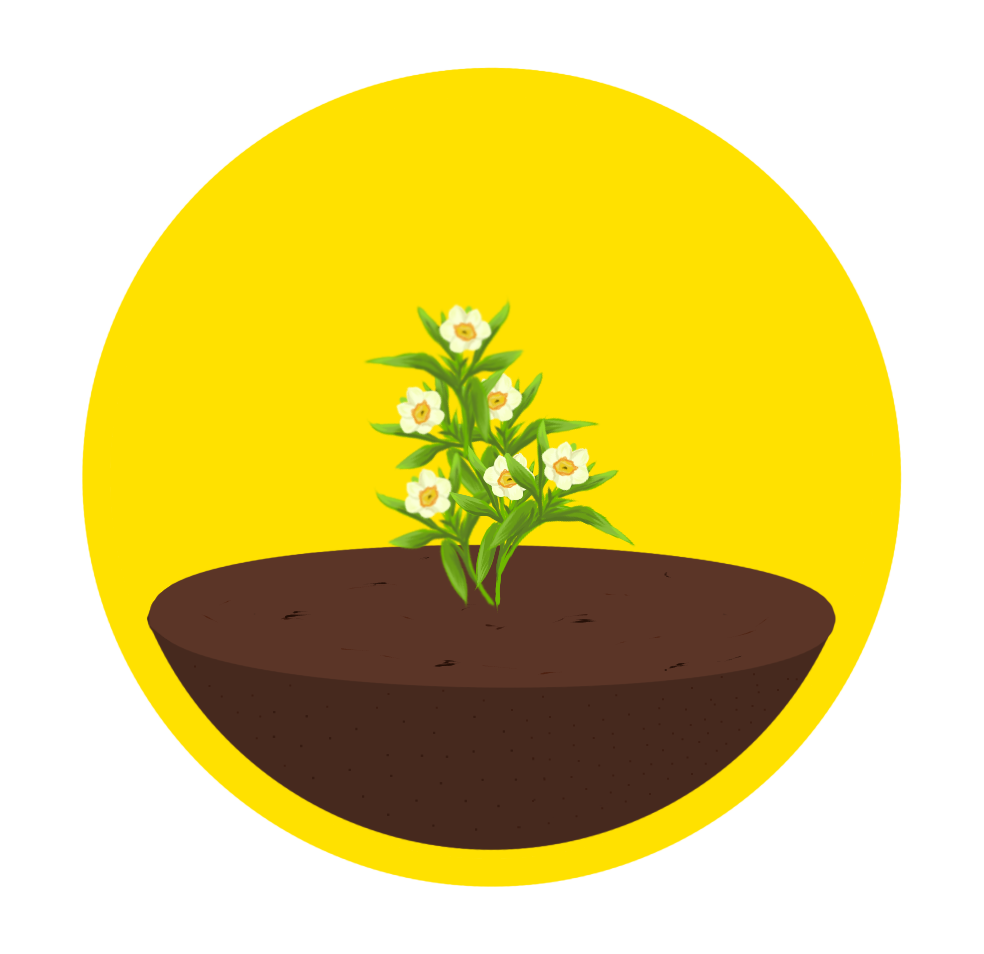

Productivity Gainer
Narcissus Mode
30:00
 





Your flower is blooming...
Sessions: 0
Total Time: 00:00
Sea Stones Timer
Ocean Mode
30:00
Tide is calm...
Voyages: 0
At Sea: 00:00
Running Challenge
Marathon Mode
30:00
Ready to run!
Distance: 0m / 3000m
Laps: 0
Total Run: 00:00
Avg Pace: 0:00/km